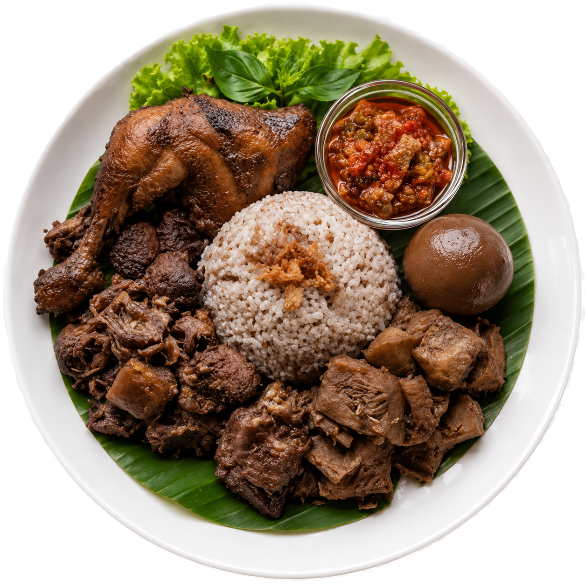
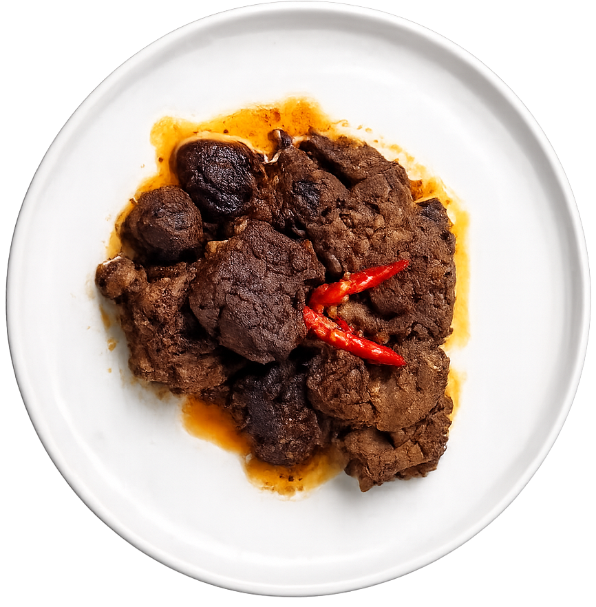
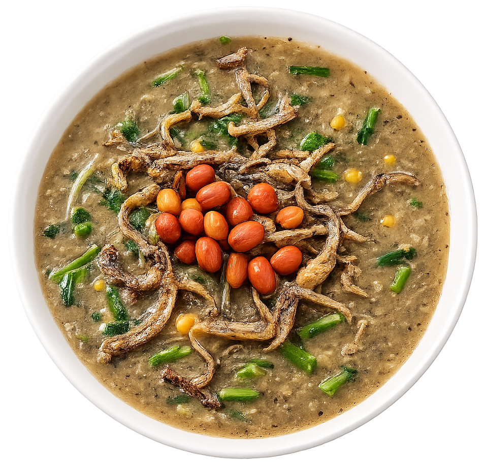
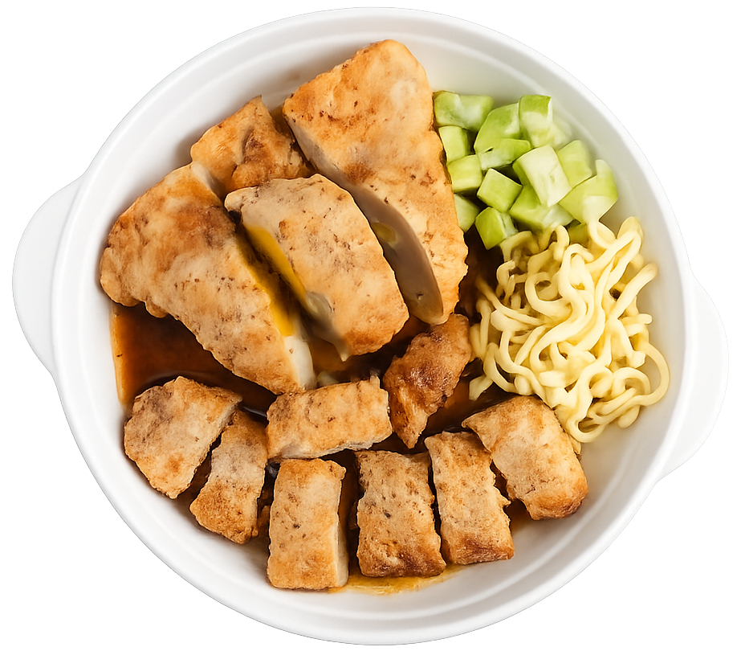

Nasi Tutug Oncom
Nasi Tutug Oncom makanan tradisional khas Tasikmalaya yang biasa juga disebut Nasi TO. Nama “tutug” berasal dari bahasa Sunda yang berarti diaduk, karena proses buatnya dengan nasi yang dicampur sambal oncom. Makanan ini biasanya disajikan bersama lauk seperti ayam goreng, tahu, tempe, sambal, dan lalapan. Bisa disajikan langsung maupun dibungkus daun pisang.

Gudeg
Gudeg merupakan makanan tradisional dari Yogyakarta yang terbuat dari nangka muda yang dimasak bersama santan, gula aren, dan berbagai rempah selama berjam-jam. Proses memasak yang lama membuat teksturnya lembut dan warnanya menjadi cokelat khas. Warna coklat dari gudeg biasanya dihasilkan oleh daun jati yang dimasak secara bersamaan.

Rendang
Rendang merupakan makanan khas masyarakat Minangkabau dari Sumatra Barat. Hidangan ini terlahir akibat perilaku sedari lampau suku Minangkabau yang gemar merantau ke sana kemari sehingga butuh banyak perbekalan, terutama hidangan yang awet, tahan lama, dan bercita rasa sesuai lidah asli orang Minang. Awal mula olahan rendang menggunakan daging rusa. Namun, karena rusa mulai sulit didapat, bahan dasarnya beralih menjadi daging sapi atau kerbau.

Bubur Pedas
Bubur Pedas merupakan makanan tradisional khas Pontianak, Kalimantan Barat. Walaupun namanya “pedas”, rasa pedas pada makanan ini tidak selalu berasal dari cabai, tetapi dari penggunaan rempah dan bahan khas seperti daun kesum. Bubur ini dibuat dari beras yang dimasak bersama berbagai sayuran seperti pakis, kangkung, dan kacang-kacangan. Makanan ini sering disajikan sebagai hidangan hangat dan memiliki nilai budaya bagi masyarakat Melayu Sambas.

Pempek
Pempek merupakan ikon kuliner yang paling melekat dengan Kota Palembang, Sumatera Selatan. Menurut sejarahnya, nama "pempek" diyakini berasal dari sebutan "apek" atau "kopek", yaitu panggilan untuk paman atau lelaki tua keturunan Tionghoa yang dahulu kala menjajakan makanan ini dengan berjalan kaki bersepeda keliling kota. Kuliner ini terbuat dari daging ikan yang digiling lembut, dicampur dengan tepung sagu atau tapioka, serta disajikan bersama kuah cuko.
